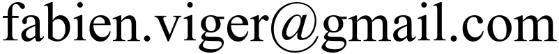

TDs d'Optimisation Combinatoire - Procédure de Rendu
Conseils généraux
Faites tout sous Linux:
- Si vous avez Windows, installez une machine virtuelle Linux (OUI, c'est vraiment nécessaire).
- Si vous avec un Mac, vous pouvez essayer de tout faire marcher, mais vous risquez d'avoir qques soucis; tenez moi au courant rapidement
N'utilisez pas d'environnement de développement tel que Eclipse ou Code::blocks. Vous avez seulement besoin:
- D'un éditeur de texte basique (éventuellement avec auto-complétion et coloration syntaxique)
- D'un terminal
Tester au fur et à mesure
Dans chaque TD, il vous est fourni une archive test.tar.gz qui permet de tester les questions à mesure que vous y répondez. Pour l'utiliser:
- Téléchargez cette archive
- Décompressez-la dans le dossier où vous travaillez
- Vous pourrez alors tester chaque question en entrant make suivi de la cible indiquée
- Si ça ne fonctionne pas, ça ne fonctionnera pas non plus avec nous !
Rendre votre TD
Chaque TD est noté et fait l'objet d'un rendu.
- Vous devez rendre votre TD individuellement. On peut s'entre-aider, mais pas de copier-coller: chacun doit taper son propre code.
- L'heure limite d'envoi pour chaque TD est (sauf indication contraire) à la fin de la journée, donc à 23h59, le même jour.
- Bien sûr, rien ne vous empêche de continuer à travailler les TD après coup! Ce ne sera pas noté officiellement, mais vous pouvez juger de la réussite des exercices grâce aux tests
- N'attendez pas le dernier moment pour soumettre!
Les rendus sont faits via Moodle.
Voici la procédure:
Créez une archive tdX.tar (eg. td3.tar pour le TD 3) contenant les fichiers demandés sans les mettre dans un dossier.
Soumettez votre archive tdX.tar via Moodle.
Attention: seule la dernière soumission compte. Testez bien votre code avant de soumettre!
Si vous n'avez pas accès a Moodle:
- Expliquez-moi la situation par email (un seul email pour l'année)
- Envoyez-moi votre TD par email (), avec comme titre "TD1" pour le TD1 par exemple, et en attachant votre fichier tdX.tar.
Aide pendant le TD
N'hesitez pas à demander de l'aide! Je ne vous pénaliserai en aucun cas si vous demandez de l'aide pendant le TD: je suis là pour ça. Au contraire, je serai content.
La note de TD est basée sur ce que vous arrivez à faire, que je vous aie aidé(e) ou non.
Collaboration, triche, plagiat, absences
- Copier du code sur quelqu'un, en plus d'être contre-productif, est interdit. Et c'est facilement détectable !
- Des outils perfectionnés détecteront la triche probable et les cas suspects seront automatiquement portés à notre attention. Tout code copié sera susceptible d'entraîner un zéro pour les deux parties concernées. Tout cas de triche répétée pourra entraîner un zéro à la note de TD, voire d'UE.
- Une absence non justifiée en avance entraîne un zéro au TD concerné.
- Même en cas d'absence justifiée, le TD reste dû et devra être rendu à lheure
Après la deadline de rendu, des corrigés seront disponibles sur demande.